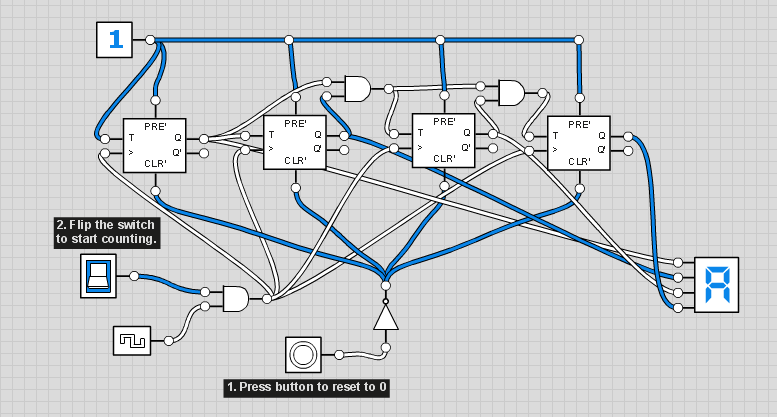
Flip-flops are, basically, digital memory circuits. Each flip-flop corresponds to a 1-bit memory.
There are several types of flip-flops, each one with its applications. Each type of flip-flop has a set of properties for which we must design a circuit. This means that, for each type of flip-flop, there is a digital circuit different from the circuits of the other types. These various different circuits, however, have similarities.
Here we will analyze 4 types of flip-flops: SR, D, JK and T.
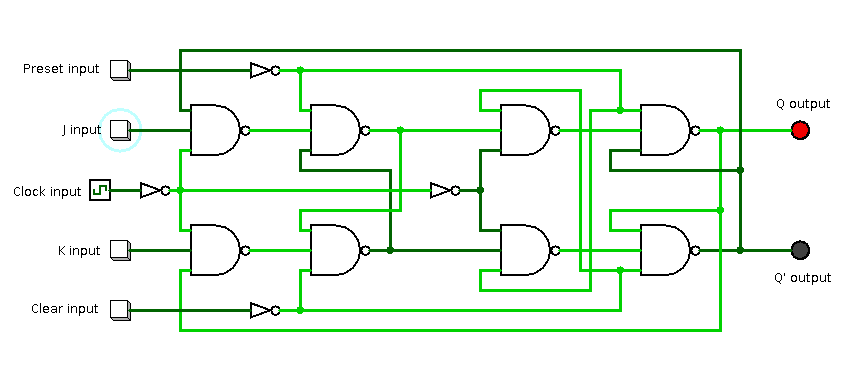
Look at the logic circuit of a JK flip-flop in the image above. Confusing, don't you think? At first glance it really seems quite complex, but if we analyze its anatomy part by part, everything will become simpler.
Everything starts with a small and simple set-reset latch circuit.
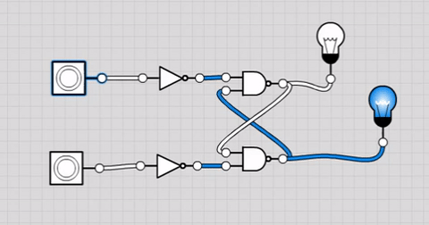
This small circuit is the basis of all flip-flops. It has 2 inputs (called set and reset) and 2 outputs (called Q and Q’). When the set input (or simply S) goes from logic level 0 to 1, the circuit “memorizes” logic level 1 on the Q output and logic level 0 on the Q’ output. Likewise, when the reset input (or simply R) goes from logic level 0 to 1, the circuit “memorizes” logic level 1 on the Q’ output and logic level 0 on the Q output. This means that, if the outputs of the circuit are Q = 1 and Q’ = 0, they remain in this state until the R input goes from logic level 0 to 1. Likewise, if the outputs of the circuit are Q = 0 and Q’ = 1, they remain in this state until the S input goes from logic level 0 to 1.
While the logic level of both inputs is 0, the state of the outputs Q and Q’ does not change, until one of the two inputs goes to logic level 1.
Note that the outputs Q and Q’ always have complementary logic levels: if Q = 1, then Q’ = 0; if Q = 0, then Q’ = 1.
However, if both inputs are at logic level 1, a logic error will occur that will cause the circuit not to behave according to this rule.
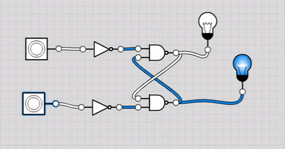
A solution to this problem will be discussed later, but before that let's continue analyzing the set-reset circuits.
In the applications of flip-flops, the state changes of the circuit need to happen in sync with the pulses of a clock.
The simplest way to add a clock to a set-reset circuit is to replace the NOT gates of the S and R inputs with two NAND gates. Each of these NAND gates must have two inputs: one for the respective input (S or R) of the circuit, and another for the clock.
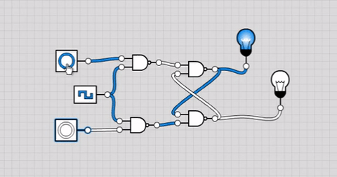
This circuit has a flaw: the state of the outputs is susceptible to changes while the clock is at logic level 1, and we do not want that. We want a circuit whose outputs are only susceptible to state changes at the exact moment the logic level of the clock goes from 0 to 1 (a moment we will call the “rising edge”). In other words, the outputs Q and Q’ cannot change state at any moment other than a rising edge of the clock.
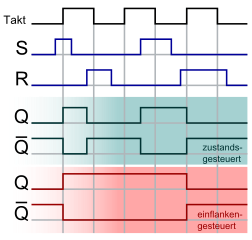
For that, it is necessary to combine two clocked set-reset circuits in a master-slave configuration. The Q and Q’ outputs of the master circuit must be connected, respectively, to the S and R inputs of the slave circuit. The clock must be inverted with a NOT gate at the input of the master circuit, and in the slave circuit, the clock must enter without inversion or with two inversions in a row.
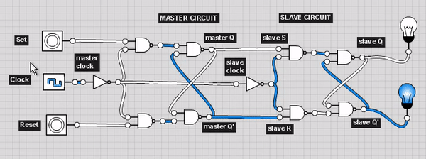
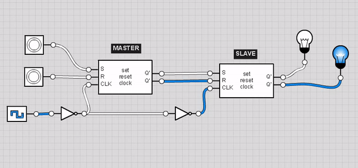
Note that, now, the outputs of the circuit only change state on the rising edge of the clock (the exact moment the logic level of the clock goes from 0 to 1).
The clock signal that enters the master circuit is the inverse of the clock signal that enters the slave circuit. The master circuit is susceptible to state changes while the logic level of the clock is 0, and the slave circuit is susceptible to state changes while the logic level of the clock is 1.
The master circuit works as a kind of filter in this configuration. The inputs of the slave circuit only receive the signals obtained from the inputs of the master circuit while the clock is at logic level 0, and the state change on the outputs of the slave circuit only happens when the clock is at logic level 1.
Roughly speaking, while the clock is at logic level 0, the input signals of the circuit are memorized in the master circuit. At the moment the logic level of the clock goes from 0 to 1 (rising edge), the outputs of the slave circuit are updated according to the state memorized in the master circuit. After the rising edge, while the clock is at logic level 1, no state change happens in the circuit.
We have already managed to design an SR flip-flop circuit with two synchronous inputs (S and R), but, for the next types of flip-flops, we also need two asynchronous inputs, which we will call preset and clear (or simply PRE and CLR). These two inputs have functions similar to the S and R inputs. The difference is that the PRE and CLR inputs can change the state of the outputs of the flip-flop at any moment, regardless of the state of the clock.
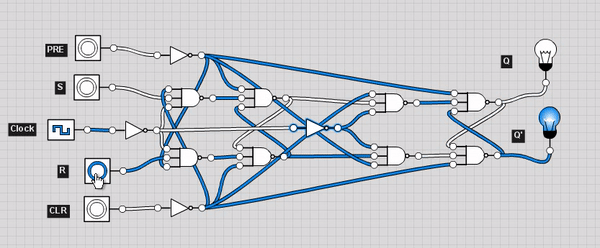
To add the PRE and CLR inputs to our flip-flop, we will need to add an input to each NAND gate of the circuit. Once this is done, we need to connect the PRE and CLR inputs, each one inverted by a NOT gate, to the NAND gates as shown in the following animations:
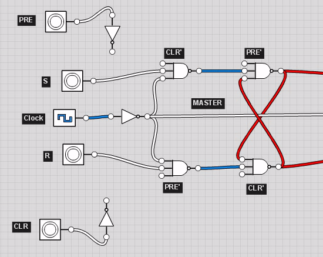
The way the PRE and CLR inputs are connected to the NAND gates is the same in the master and slave circuits:
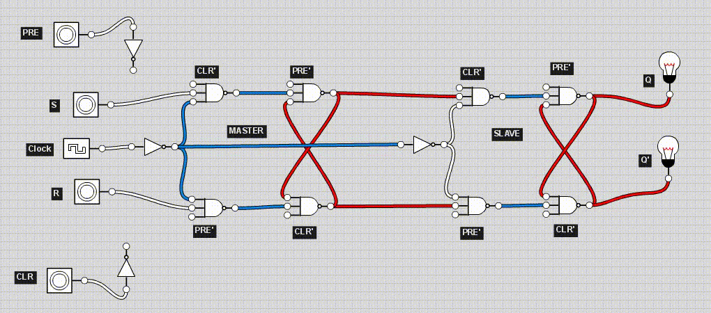
To fix the logic error problem of SR flip-flops when both inputs are at logic level 1, there are JK flip-flops, which are similar to SR ones, with one difference: when both inputs (J and K) are at logic level 1, instead of a logic error occurring, the outputs Q and Q’ have their states inverted.
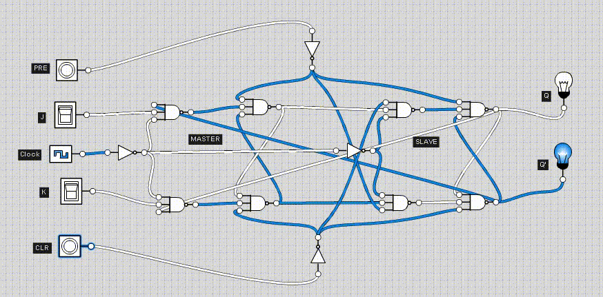
This circuit can be designed based on the SR flip-flop circuit we built earlier. Just connect the Q’ output of the circuit to the NAND gate of the S input and the Q output to the NAND gate of the R input. We can disconnect the PRE and CLR inputs from these two NAND gates to make room for the new connections.
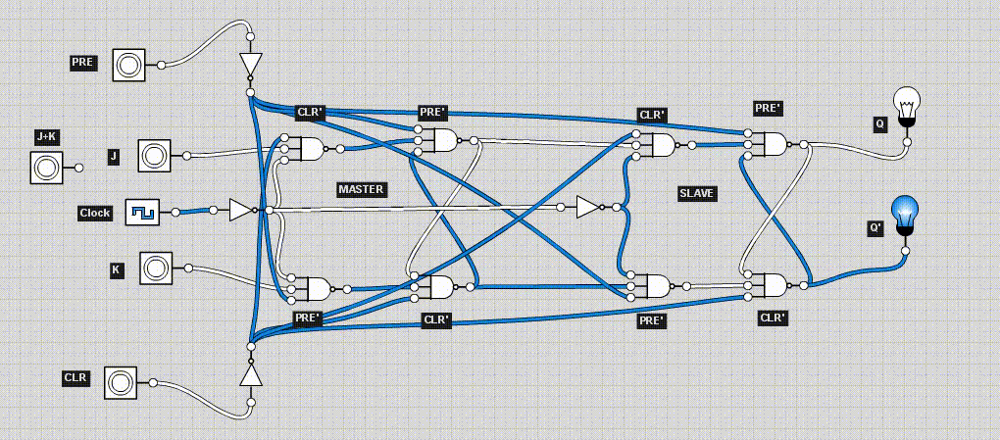
The other two types of flip-flops are based on JK flip-flops. We do not even need to modify the circuit we have already built, we just need to add a few things.
T (toggle) flip-flops have clock, T, PRE and CLR inputs, and Q and Q’ outputs. These are, basically, flip-flops in which the state of the outputs is toggled on the rising edge of the clock when the T input is at logic level 1.
To design a T flip-flop, just join the J and K inputs of a JK flip-flop and turn them into a single T input.
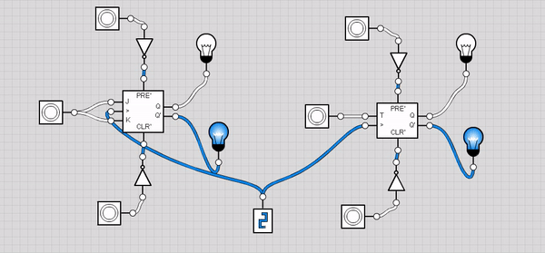
D (data) flip-flops have clock, D, PRE and CLR inputs, and Q and Q’ outputs. These are, basically, flip-flops in which the state of the Q output is set equal to the state of the D input on the rising edges of the clock.
To design a D flip-flop, just connect the D input to the J input of the JK flip-flop and the D input, negated by a NOT gate, to the K input of the JK flip-flop.
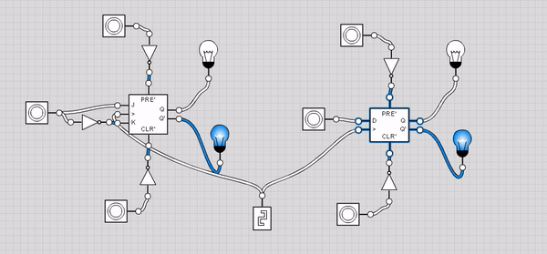